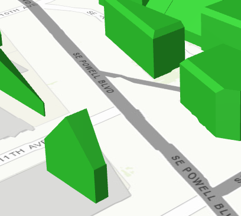
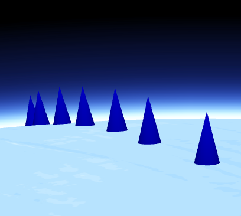

Overview
The ArcGIS API for JavaScript 4.x reimagines the API in terms of its support for both 2D and 3D, its ease of use, its ability to work with map and layer web resources stored as items in the ArcGIS geoinformation model, and its support for building engaging and elegant user experiences.
Developers can build full-featured 3D applications powered by Web Scenes that can include rich information layers such as terrain, basemaps, imagery, features, and 3D objects that can be streamed via tile, feature, image, and scene services. In addition, core capabilities are also included for working with Web Maps and Layers that can be used to build compelling 2D applications using the simplified programming pattern.
Developers will find the programming patterns for working in 2D and 3D to be pleasantly similar if not identical.
Not all 2D layers and capabilities supported in the 3.x API are supported in 4.9 (see Choose a version for more information). We expect developers to study the supported capabilities and make judicious choices with respect to targeting their applications at the 3.x API or the 4.x API as appropriate. The 4.x API is rapidly evolving so that it not only matches the features in 3.x but far extends its reach. For information on the 3.x and 4.x release plan, see the FAQ.
This is an overview of some key capabilities of the API:
- Simple and consistent API
- Make a 3D map as easily as a 2D map
- Easily integrate with your web GIS
- Author, manage, and mash-up layers using layer items
- Build a great user experience
- Create meaningful visualizations of your data
- Enable interactivity using the geometry and projection engines
- Bring in vector tile layers
- Login to the platform and access secured content
- Integrate GIS capabilities using tasks
- Work with third party tools
Simple and consistent API
The ArcGIS API for JavaScript offers a smooth developer experience with a clean implementation. With this comes changes to how developers should plan their application's implementation. The following breaks down some of the main points to consider when writing applications using the API.
Constructors and properties
All properties of a class can be set within the constructor, and there is only one constructor per class. Properties of a class can be set via its constructor or directly on the property itself.
This snippet sets the center point and scale directly in the 2D MapView constructor.
const view = new MapView({
center: [ -122, 38 ],
scale: 12345678
});
This snippet creates a 2D MapView with an empty constructor and sets the center point and scale properties separately.
view = new MapView();
view.center = [ -122, 38 ];
view.scale = 12345678;
Watching property changes
You can listen for property changes using the .watch() method. Watching property changes are handled with the .watch(property, callback) method. The callback is called each time the watched property changes. It is also possible to watch for a nested property, such as basemap.title.
// watch handler: the callback fires each time the title of the map's basemap changes
var handle = map.watch('basemap.title', function(newValue, oldValue, property, object) {
console.log("New value: ", newValue, // The new value of the property
"<br>Old value: ", oldValue, // The previous value of the changed property
"<br>Watched property: ", property, // In this example this value will always be "basemap.title"
"<br>Watched object: ", object); // In this example this value will always be the map object
});
For additional information on getting, setting, and watching properties, please refer to the Working with properties topic.
Autocasting
Autocasting is a convenient way to set typed properties without referencing extra API modules via the require() function. Developers can pass constructor parameters directly to the desired property and the API will instantiate the object with the provided constructor parameters internally, making the process simpler for the developer. For more information, visit the Autocasting Guide page.
Make a 3D map as easily as a 2D map
With map views and scene views, developers can render a map with a 2D view or a 3D view (or both) with just a few lines of code. Working with a 3D view is much like working with a 2D view. For example, both views share the same implementation for layers, renderers, tasks, geometry, symbology, pop-ups, and navigation, but 3D adds 3D-specific concepts such as environment (atmosphere and lighting) and the camera. Learn more about 2D map view and 3D scene view.
3D support
A SceneView displays a 3D view of a Map or WebScene instance.
This 3D snippet sets the center point and scale directly in the SceneView constructor.
const view = new SceneView({
container: "viewDiv",
map: map,
scale: 500000,
center: [-101.17, 21.78]
});
The Viewpoint and Camera classes are an integral part of working in 3D. The Camera provides the point of observation for a visible extent in a 3D view. The Viewpoint describes the point of view for either a 2D or 3D View, and supports rotation. It can do this by either:
- Displaying an area by storing its extent, or
- Displaying the cartographic representation by storing information about the scale.
In a 2D view, the Viewpoint is determined using a center point and scale value, whereas the Camera position determines it for a 3D view. This is done because scale is treated differently between 2D and 3D views.
This 3D code snippet uses the Camera position inside the SceneView constructor.
var view = new SceneView({
container: "viewDiv",
map: map,
camera: {
position: [7.654, 45.919, 5184],
tilt: 80
}
});
This Viewpoint code snippet works in both 2D and 3D.
var viewpoint = new Viewpoint({
targetGeometry: new Point({
x: 4.4856,
y: 48.3908
}),
scale: 2000
});
3D symbology
In addition to the SceneView mapping component, this also includes support for 3D layer types and 3D symbology. Each 3D symbol may consist of several symbol layers. Because of this, a single graphic and/or geometry can be symbolized in multiple ways. More information about Visualizing points with 3D symbols can be found in the Guide. Below is an example of two different types of 3D symbology.
| 3D Fill Symbol | 3D Object Symbol |
|---|---|
|  |  |
Easily integrate with your web GIS
Many developers have adopted the pattern of authoring a web map in ArcGIS Online and/or Portal for ArcGIS and consuming it in an app. They create beautiful visualizations of their data, configure pop-ups, setup bookmarks, and then load the map into their app simply by referencing the web map's ID. With this version of the ArcGIS API for JavaScript, you can follow the same pattern with 3D maps using web scenes. This is accomplished by styling your map in ArcGIS Online or Portal for ArcGIS, saving it as a web scene, and then loading it in your app using the web scene's ID.
The ArcGIS API for JavaScript's architecture mirrors the web map and web scene structure. Because of this, you get the same structure you would expect in a web map or a web scene such as operational layers, basemaps (with reference layers) and other map properties like bookmarks and slides. This mapping API structure remains the same regardless if you build a map yourself in code, or if you open a map from a portal item.
Author, manage, and mash-up layers using layer items
Layer items are similar to web maps in that they allow developers to setup initial extent, rendering, filtering, pop-ups, and other settings. In contrast to web maps, which consist of the entire map, layer items represent individual map layers. This allows you to choose the individual layers needed for each application. If you are developing in a team environment, others can also consume your layers, which are represented in a meaningful and consistent way. The API allows you to load layers by referencing the layer item's ID.
Build a great user experience
The ArcGIS API for JavaScript was designed to give you the tools to build an app that has a polished user interface and responsive design. Widgets, flexible UI placement, and control over the map view are a few of the capabilities in this API that will help you build a user-friendly app suitable for any device.
Widgets are the UI building blocks. API widgets have been built from the ground up with a clean user experience adaptable for any screen resolution. Widgets can be easily placed in one of the corners or offset from the edge. Relative placement of UI elements helps accommodate multiple screen resolutions.
You can use API widgets as-is or style theme using CSS to change specific aspects of the widget such as button color.
Controlling the map view: If you need the map to fill only a portion of the screen so that a menu or other UI element occupies the rest of the space, you will want to keep a particular extent centered on the screen. Using view padding, you can make the map center or extent work off a subsection of the full view. As the screen size changes, your map will be centered relative to the location you specified.
Create meaningful visualizations of your data
Developers can turn raw data into information with simple layer styling, rich pop-up windows using the API's pop-up implementation and data-driven visualizations. The ArcGIS API for JavaScript supports visualizing features in 2D and 3D views using color, size and opacity. Renderers can be used to thematically represent data such as population or represent real-world values such as the width of a tree canopy or the height of a building. For more information, refer to the Visualization Overview guide page.
Enable interactivity using the geometry and projection engines
Developers can leverage the API's local geometry engine to build interactive apps. Having the geometry engine client-side enables developers to perform operations such as buffer, measurement, and spatial intersect without having to make calls to the server; this means that apps can display immediate feedback to the user, enabling a great user experience.
The client-side projection engine provides a way to convert geometries from one spatial reference to another client-side. See this in action with the Client-side projection sample.
Bring in vector tile layers
ArcGIS Online has support for vector tile layers as a layer in a web map, and is a supported layer type in the API. Vector tiles are similar to image tiles, but they store a vector representation of the data. Client-side drawing of vector tiles allows for vector tile layers to be customized for the purpose of the map and drives dynamic, interactive cartography.
Login to the platform and access secured content
Allow your end users to login to the platform to access secured content using OAuth, or use legacy token-based authentication. Using OAuth will allow you to manage access to your maps and apps in Online or Enterprise, and track statistics to see how people are using the apps you've built. Read more about secured content in the Access Secure Resources Guide page.
Integrate GIS capabilities using tasks
Developers build-in powerful ArcGIS capabilities into their apps using tasks. Some of the tasks have always been available, for example: Geoprocessing, Network Analyst tasks (like closest facility and routing), Locator, and QueryTask. In addition, some capabilities are new, for example: Workflow Manager tasks. The full list of currently supported tasks is available with the API Reference.
Work with third party tools
All widgets in the ArcGIS API for JavaScript have been re-engineered to enhance their extensibility and customization. Each widget's presentation is separate from its properties, methods, and data. You can use widgets as-is, style theme with CSS, or completely customize the UI. While the API is built on Dojo, its widgets are not entirely dependent on Dojo's Dijit framework. The separation of core logic and presentation lets you more easily create new widgets and repurpose existing widgets with any third-party framework such as Bootstrap, React, or jQuery. Learn more about widgets with the BasemapToggle widget tutorial and the custom widget development Guide page.
Integrating with frameworks: When working on complex solutions, such as enterprise apps, you may want to integrate the ArcGIS API for JavaScript API into a third-party framework such as Angular, React, Vue, or Ember. This can make code more maintainable and facilitate development when you are collaborating with other developers. Learn more about integrating version 4.x with other development frameworks.
Development environments: Create local builds and bring the API into modern development environments. We recommend using Webpack, which is a module bundler for modern JavaScript applications. You could also use npm to generate custom builds of the ArcGIS API for JavaScript.